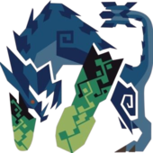

Brachydios

Brute Wyvern
Wyverns brutales cubiertos de una sustancia explosiva verde llamada
"nitro": un raro hongo viscoso que explota con fuerza debido a un
elemento de la saliva del monstruo. Además, sus patas delanteras
propinan golpes muy peligrosos.
Apariencia
Como otros Wyverns brutales, el Brachydios se asemeja a un
dinosaurio. Su cuerpo robusto está protegido por una coraza de color
azul violáceo, mientras que sus desarrollados brazos y su cuerno en
forma de torpedo están recubiertos de una sustancia verde neón que
se torna amarilla cuando se enfada. Su cola acaba en una maza en
forma de corona.
Ecología
La coraza de obsidiana del Brachydios le permite habitar lugares de
temperaturas extremas, ya sean zonas volcánicas o zonas heladas,
también ha sido avistado en la Isla Desierta. Es un monstruo muy
territorial que rivaliza con grandes depredadores como Agnaktor.